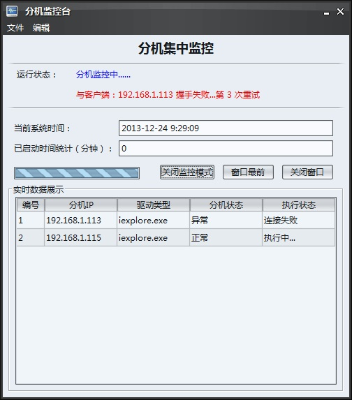
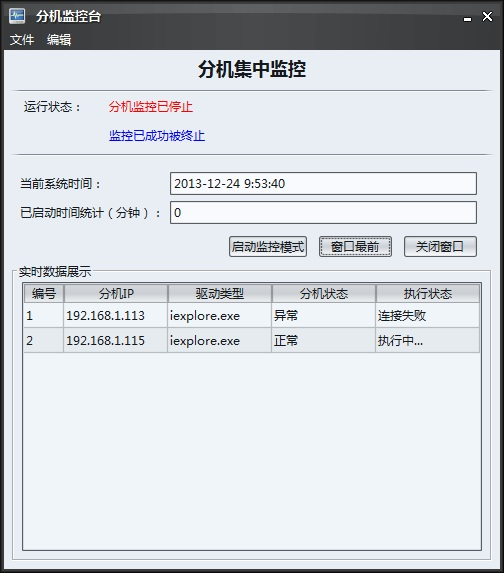

当您使用分布式模式执行用例时，就需要对所有的分机进行监控，包括监控分机的健康状况、分机的执行进展、是否有空闲资源等。那么本模块就是为您完成这些工作的。此外，还可将界面锁定最前，停止监控/开启监控等。下面对该功能模块进行详细介绍：
第一步：配置所要监控的分机
在主程序的安装目录找到phoenix文件夹，旗下找到config，然后找到phoenix.properties，然后找到ServerIP关键项，配置方式与 "分布式配置" 是完全一致的。多个IP之间使用 ”," 符号隔开：
ServerIP=192.168.1.112,192.168.1.113
如果在”分布式配置“模块已经配置过了，则在此就不用配置了。第二步：启动分布式监控模块
前提必须各个客户端处于开启状态，否则无法连接。如果分布式模式已经启动后，则可通过在程序主界面点击”工具“，然后选择”分机监控“来启动，或者直接点击界面上的 .png) 图标启动。启动之后通过点击界面上的“启动监控模式”，才会开始监控。如图：
图标启动。启动之后通过点击界面上的“启动监控模式”，才会开始监控。如图：

在监控状态下，程序会每隔6秒（该时间可配置，关键字为phoenix.properties配置文件中的MonitorFreq关键项）与各个分机客户端逐个握手通信一次，然后将汇总结果在该界面的Table中展示。如果首次与某分机连接失败，则会重试10次，每次间隔时间1秒。在监控过程中，可通过点击“窗口最前”按钮，将窗口锁定在所有窗口最前显示。可通过点击“关闭最前”可取消窗口最前显示。
第三步：关闭分布式监控
通过点击界面上的“关闭监控模式”来停止对各分机的监控，待界面显示“监控状态已成功被终止”字样时，说明监控已关闭。如图：

通过点击界面的“关闭窗口”或者通过“文件”菜单“选择退出，来关闭窗口。关闭窗口后请先关闭监控，否则其会在后台一直处于监控状态。但对执行流程没有影响，再次启动时，可继续进行监控。
至此，分布式监控模块讲解完毕。如果疑问或好的建议，请您到 心得交流区 进行留言，我会认真对待您给的建议。